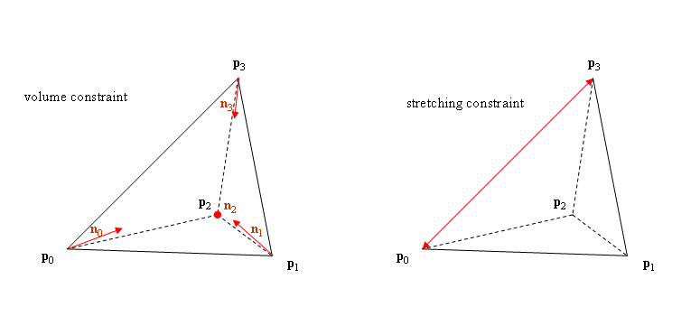

Soft Body Parameters
Soft body parameters may be specified during soft body creation, using
members of the NxSoftBodyDesc, or after creation using members of NxSoftBody.
Many of the soft body's properties have a similar, if not identical,
interpretation as their NxCloth / NxClothDesc counterpart.
Flags
NxSoftBodyDesc::flags
or
NxSoftBody::setFlags()
The following flags may be used:
- NX_SBF_STATIC - Makes the soft body static.
- NX_SBF_DISABLE_COLLISION - Disable collision handling with the rigid
body scene.
- NX_SBF_SELFCOLLISION - Enable/disable self-collision handling within a single soft body.
Self-collisions are only handled inbetween the soft body's particles,
i.e., particles do not collide against the tetrahedra of the soft body.
The user should therefore specify a large enough particleRadius to avoid most interpenetrations.
See NxSoftBodyDesc.particleRadius.
- NX_SBF_VISUALIZATION - Enable/disable debug visualization.
- NX_SBF_GRAVITY - Enable/disable gravity. If off, the soft body is not
subject to the gravitational force of the rigid body scene.
- NX_SBF_VOLUME_CONSERVATION - Select volume conservation through
NxSoftBodyDesc.volumeStiffness.
- NX_SBF_DAMPING - Enable/disable damping of internal velocities. Use
NxSoftBodyDesc.dampingCoefficient to control damping.
- NX_SBF_COLLISION_TWOWAY - Enable/disable two way collision of the soft
body with the rigid body scene. In either case, the soft body is
influenced by colliding rigid bodies. If NX_SBF_COLLISION_TWOWAY is not
set, rigid bodies are not influenced by colliding with the soft body. Use
NxSoftBodyDesc.collisionResponseCoefficient to control the strength of
the feedback force on rigid bodies.
When using two way interaction care should be taken when setting the
density of the attached objects. For example if an object with a very low
or high density is attached to a soft body then the simulation may behave
poorly.
This is because impulses are only transfered between the soft body and
rigid body solver outside the solvers.
- NX_SBF_TEARABLE - Defines whether the soft body is tearable. Make sure
meshData.maxVertices and the corresponding buffers in meshData are
substantially larger (e.g. 2x) than the number of original vertices since
tearing will generate new vertices. When the buffer cannot hold the new
vertices anymore, tearing stops. If this buffer is chosen big enough, the
entire mesh can be torn into all constituent tetrahedral elements. (The
theoretical maximum needed is 12 times the original number of vertices.
For reasonable mesh topologies, this should never be reached though.)
If the soft body is simulated on the hardware, additional buffer
limitations that cannot be controlled by the user exist. Therefore, soft
bodies might cease to tear apart further, even though not all space in
the user buffer is used up.
Note: For tearing in hardware, make sure you cook the mesh with the
flag NX_SOFTBODY_MESH_TEARABLE set in the NxSoftBodyMeshDesc.flags.
- NX_SBF_HARDWARE - Defines whether this soft body is simulated on the
PPU. To simulate a soft body on the PPU set this flag and create the soft
body in a regular software scene.
- NX_SBF_COMDAMPING - Enable/disable center of mass damping of internal
velocities. This flag only has an effect if the flag NX_SBF_DAMPING is
set. If set, the global rigid body modes (translation and rotation) are
extracted from damping. This way, the soft body can freely move and
rotate even under high damping. Use NxSoftBodyDesc.dampingCoefficient to
control damping.
- NX_SBF_VALIDBOUNDS - Enable valid bounds for this cloth.
Volume And Stretching Stiffness
NxSoftBodyDesc::volumeStiffness
or
NxSoftBody::setVolumeStiffness()
NxSoftBodyDesc::stretchingStiffness
or
NxSoftBody::setStretchingStiffness()
Volume and stretching stiffnesses are used the specify how strongly the
soft body responds to deviations from the rest state given by the input mesh.
The soft body simulation manipulates the vertex positions to counteract
deformations that change the volume and edge lengths of each tetrahedral
element.

The stiffnesses of both constraint types can be set independently to a
number in the range 0 to 1, similar to the bending and stretching stiffness
values in the cloth simulation. The following combinations are typical:
|
low volume stiffness |
high volume stiffness |
| low stretching stiffness |
The soft body vertices act as independently of each other as
possible. |
The soft body shape may now deviate strongly from the original
configuration, but the preserved overall volume will still retain the
original size. |
| high stretching stiffness |
Only edge lengths are preserved. The simulation may still behave
similarly as if a high volume stiffness were given. However, heavy
deformations may cause tetrahedral elements to be inverted to their
mirror image, causing the soft body to be trapped in an entangled
state (from which it can usually recover though, once the volume
stiffness is increased again). |
The simulation maintains the original mesh configuration as closely
as possible. |
Note that even if the stretching stiffness is set very low, tetrahedron
edges will cease to stretch further if their length exceeds a certain
internal limit. This is done to prevent heavily degenerated tetrahedral
elements which could occur if the vertices could move totally independent of
each other.
Volume stiffness only has an effect if NX_SBF_VOLUME_CONSERVATION is
set.
Density
NxSoftBodyDesc::density
NOTE: Density can only be specified when creating a soft body.
Density indirectly specifies the mass of the soft body particles. The mass of
a particle is calculated as the sum of the following equation (for tetrahedra
sharing a point):
1/4 * tetrahedronVolume * density
Particle Radius
NxSoftBodyDesc::particleRadius
or
NxSoftBody::setParticleRadius()
The particle radius specifies the radius of the particle's surrounding sphere
used during collision detection, improving its robustness. Setting it very
low is not recommended as this will lead to poor collision handling. This
parameter is the soft body's analogue to the thickness parameter of the cloth.
Other Fields
All other fields implement the same functionality as their cloth counterparts. E.g.
- Damping
- Solver Iterations
- Attachment Response Coefficent
- Collision Response Coefficient
- Friction
- External Acceleration
- Valid bounds
API Reference
Copyright © 2008 NVIDIA Corporation, 2701 San Tomas Expressway, Santa Clara, CA 95050 U.S.A. All rights reserved. www.nvidia.com